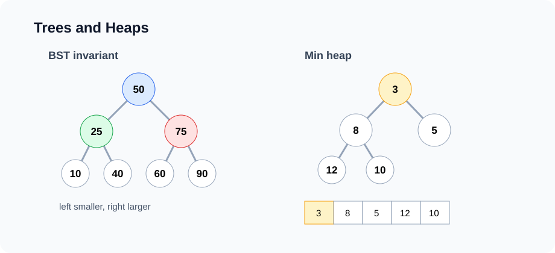

Lesson 8
Heaps and Priority Queues
A priority queue returns the most important item first. A binary heap is the most common way to implement it. Heaps are useful when full sorting is unnecessary, but repeated minimum or maximum access is essential.

Example first: emergency room triage
A normal queue serves patients in arrival order. An emergency room cannot do that. A critical patient should be treated before a minor injury even if they arrived later. This is a priority queue problem.
record Patient(String name, int severity) { }
PriorityQueue<Patient> pq = new PriorityQueue<>(
Comparator.comparingInt(Patient::severity).reversed()
);
pq.add(new Patient("Ava", 3));
pq.add(new Patient("Noah", 9));
pq.add(new Patient("Mia", 5));
System.out.println(pq.remove().name()); // NoahThe priority rule decides removal order. The data structure does not need to keep every patient fully sorted; it only needs to know who should come out next.
ADT first: priority queue
A priority queue is an abstract data type. It defines operations, not implementation.
interface MinPriorityQueue<E> {
void add(E value);
E peekMin();
E removeMin();
int size();
boolean isEmpty();
}| Operation | Meaning | Binary heap cost |
|---|---|---|
add | Insert a value | O(log n) |
peekMin | Read the smallest value | O(1) |
removeMin | Remove and return the smallest value | O(log n) |
size | Number of values stored | O(1) |
Heap invariant
A min-heap is a complete binary tree where every parent is less than or equal to its children.
2
/ \
5 3
/ \ / \
9 7 8 4This is not a binary search tree. A heap does not guarantee that the left child is smaller than the right child, and it does not support fast search for arbitrary values. It only guarantees that the minimum is at the root.
| Structure | Main guarantee | Good for |
|---|---|---|
| BST | Left subtree < node < right subtree | Search, sorted order, range queries |
| Heap | Parent has higher priority than children | Repeated min/max |
Array representation
Heaps are usually stored in arrays, not node objects. The tree shape is implicit.
index: 0 1 2 3 4 5 6
value: [2, 5, 3, 9, 7, 8, 4]| Relationship | Formula |
|---|---|
| Left child of i | 2 * i + 1 |
| Right child of i | 2 * i + 2 |
| Parent of i | (i - 1) / 2 |
A complete binary tree with n nodes has height O(log n). That is why bubbling up or down is
logarithmic.
Implementation: integer min-heap
This educational implementation uses ArrayList<Integer> as the backing store. The same idea
works with a raw array.
class IntMinHeap {
private final ArrayList<Integer> data = new ArrayList<>();
public int size() {
return data.size();
}
public boolean isEmpty() {
return data.isEmpty();
}
public int peekMin() {
if (data.isEmpty()) throw new NoSuchElementException();
return data.get(0);
}
}Adding: swim upward
To add a value, place it at the end to preserve the complete-tree shape. Then repeatedly swap it with its parent until the heap invariant is restored.
public void add(int value) {
data.add(value);
swim(data.size() - 1);
}
private void swim(int i) {
while (i > 0) {
int parent = (i - 1) / 2;
if (data.get(parent) <= data.get(i)) break;
swap(parent, i);
i = parent;
}
}
Since the item moves up at most one tree level per swap, add is O(log n).
Removing minimum: sink downward
The minimum is at index 0. To remove it, swap the last item into the root, remove the old last position, then sink the root downward until the invariant is restored.
public int removeMin() {
if (data.isEmpty()) throw new NoSuchElementException();
int answer = data.get(0);
int last = data.remove(data.size() - 1);
if (!data.isEmpty()) {
data.set(0, last);
sink(0);
}
return answer;
}
private void sink(int i) {
while (true) {
int left = 2 * i + 1;
int right = 2 * i + 2;
int smallest = i;
if (left < data.size() && data.get(left) < data.get(smallest)) {
smallest = left;
}
if (right < data.size() && data.get(right) < data.get(smallest)) {
smallest = right;
}
if (smallest == i) break;
swap(i, smallest);
i = smallest;
}
}private void swap(int i, int j) {
int tmp = data.get(i);
data.set(i, data.get(j));
data.set(j, tmp);
}Build heap: heapify
If we insert n items one by one, building a heap costs O(n log n). But if all values are already
in an array, we can heapify bottom-up in O(n).
static void heapify(int[] a) {
for (int i = a.length / 2 - 1; i >= 0; i--) {
sink(a, i, a.length);
}
}The proof is subtle: most nodes are near the leaves and can sink only a short distance. The total work across all nodes is linear.
Heap sort preview
Heap sort uses a heap to repeatedly remove the max or min. It sorts in O(n log n) time and can be
implemented in-place, but it is not stable.
HEAP-SORT(a):
build a max-heap from a
repeatedly swap max with the end
shrink heap size
sink the new rootSorting will be covered in more detail in Lesson 10.
Java PriorityQueue
Java's PriorityQueue is a min-heap by default.
PriorityQueue<Integer> minHeap = new PriorityQueue<>();
minHeap.add(5);
minHeap.add(2);
minHeap.add(9);
System.out.println(minHeap.peek()); // 2
System.out.println(minHeap.remove()); // 2For a max-heap, reverse the comparator.
PriorityQueue<Integer> maxHeap =
new PriorityQueue<>((a, b) -> Integer.compare(b, a));
Do not write (a, b) -> b - a for general integers; subtraction can overflow. Use
Integer.compare.
Custom object priorities
Priority queues are often used with objects. Define the priority explicitly with a comparator.
record Task(String name, int priority, int duration) { }
PriorityQueue<Task> tasks = new PriorityQueue<>(
Comparator.comparingInt(Task::priority).reversed()
.thenComparingInt(Task::duration)
);
tasks.add(new Task("write report", 4, 60));
tasks.add(new Task("fix bug", 9, 15));
tasks.add(new Task("email", 4, 5));This comparator sorts by higher priority first, then shorter duration when priorities tie.
Application 1: Top K largest
To find the k largest values, keep a min-heap of size k. The smallest value in the heap is the cutoff.
static List<Integer> topKLargest(int[] nums, int k) {
PriorityQueue<Integer> heap = new PriorityQueue<>();
for (int x : nums) {
heap.add(x);
if (heap.size() > k) {
heap.remove();
}
}
return new ArrayList<>(heap);
}
Time is O(n log k). Space is O(k). Sorting everything would cost
O(n log n).
Application 2: Top K frequent elements
Count frequencies with a HashMap, then keep the k most frequent items in a min-heap by frequency.
static List<Integer> topKFrequent(int[] nums, int k) {
Map<Integer, Integer> freq = new HashMap<>();
for (int x : nums) {
freq.put(x, freq.getOrDefault(x, 0) + 1);
}
PriorityQueue<Integer> heap = new PriorityQueue<>(
Comparator.comparingInt(freq::get)
);
for (int x : freq.keySet()) {
heap.add(x);
if (heap.size() > k) heap.remove();
}
return new ArrayList<>(heap);
}
If there are m distinct values, heap work is O(m log k), plus O(n) for counting.
Application 3: merge k sorted lists
A heap can repeatedly choose the smallest current head among k sorted lists.
record Entry(int value, int listIndex, int elementIndex) { }
static List<Integer> mergeSortedLists(List<List<Integer>> lists) {
PriorityQueue<Entry> heap = new PriorityQueue<>(
Comparator.comparingInt(Entry::value)
);
for (int i = 0; i < lists.size(); i++) {
if (!lists.get(i).isEmpty()) {
heap.add(new Entry(lists.get(i).get(0), i, 0));
}
}
List<Integer> out = new ArrayList<>();
while (!heap.isEmpty()) {
Entry cur = heap.remove();
out.add(cur.value());
int nextIndex = cur.elementIndex() + 1;
List<Integer> list = lists.get(cur.listIndex());
if (nextIndex < list.size()) {
heap.add(new Entry(list.get(nextIndex), cur.listIndex(), nextIndex));
}
}
return out;
}
If there are N total elements and k lists, time is O(N log k), and heap space is
O(k).
Application 4: median from a stream
Keep the smaller half in a max-heap and the larger half in a min-heap. Balance sizes so they differ by at most one.
class MedianFinder {
private PriorityQueue<Integer> small =
new PriorityQueue<>((a, b) -> Integer.compare(b, a));
private PriorityQueue<Integer> large = new PriorityQueue<>();
public void addNum(int num) {
if (small.isEmpty() || num <= small.peek()) small.add(num);
else large.add(num);
if (small.size() > large.size() + 1) large.add(small.remove());
if (large.size() > small.size()) small.add(large.remove());
}
public double findMedian() {
if (small.size() == large.size()) {
return (small.peek() + large.peek()) / 2.0;
}
return small.peek();
}
}
Each insertion costs O(log n). Reading the median costs O(1).
Application 5: Dijkstra preview
Dijkstra's shortest path algorithm uses a priority queue to repeatedly expand the currently closest known vertex. We will study the full algorithm in the graph lesson.
record State(int node, int dist) { }
PriorityQueue<State> pq = new PriorityQueue<>(
Comparator.comparingInt(State::dist)
);This is the same idea as BFS, except the "next" item is chosen by smallest distance, not arrival order.
Choosing heap vs sorting
| Need | Use | Reason |
|---|---|---|
| Need all items sorted once | Sort | Simple and complete ordering |
| Need only k largest/smallest | Heap of size k | O(n log k) |
| Need repeated min/max over changing data | Priority queue | O(log n) update, O(1) peek |
| Need fast arbitrary search | HashMap or TreeMap | Heap does not support this well |
Common mistakes
- Thinking a heap is fully sorted. It is not.
- Confusing heap invariant with BST invariant.
- Using a heap when all items need to be sorted; sorting may be simpler.
- Using subtraction in a comparator and risking integer overflow.
- Forgetting that Java
PriorityQueueis a min-heap by default. - Expecting fast search or removal of arbitrary elements from a heap.
Analysis routine
ANALYZE-HEAP-PROBLEM(problem):
1. What priority decides the next item?
2. Do we need min, max, or custom priority?
3. How large can the heap get?
4. Count add/remove operations: each is O(log heapSize).
5. Count peek operations: each is O(1).
6. Compare against sorting.
7. State time and auxiliary space.In-class exercises
- Given an array representation, identify parent and child indices.
- Trace
addandremoveMinby hand. - Implement
IntMinHeapwithswimandsink. - Find top k largest values.
- Find top k frequent values.
- Merge k sorted lists.
- Maintain median from a stream using two heaps.
Homework: GitHub submission
Create a folder named lesson-08-heaps in the course homework repository.
lesson-08-heaps/
README.md
src/
MinPriorityQueue.java
IntMinHeap.java
HeapProblems.java
MedianFinder.java
Main.java
analysis/
heap-analysis.mdRequired implementation
- Implement
IntMinHeapwithadd,peekMin,removeMin,size, andisEmpty. - Implement
topKLargest. - Implement
topKFrequent. - Implement
mergeSortedLists. - Implement
MedianFinder.
README requirements
- Explain the difference between a priority queue and a heap.
- Explain the heap invariant.
- Explain array parent/child index formulas.
- State time and auxiliary space for every method.
- Include at least two tests for each required method.
Optional challenge
Implement heap sort using an in-place max-heap. Explain why it is O(n log n), O(1) auxiliary space, and not stable.